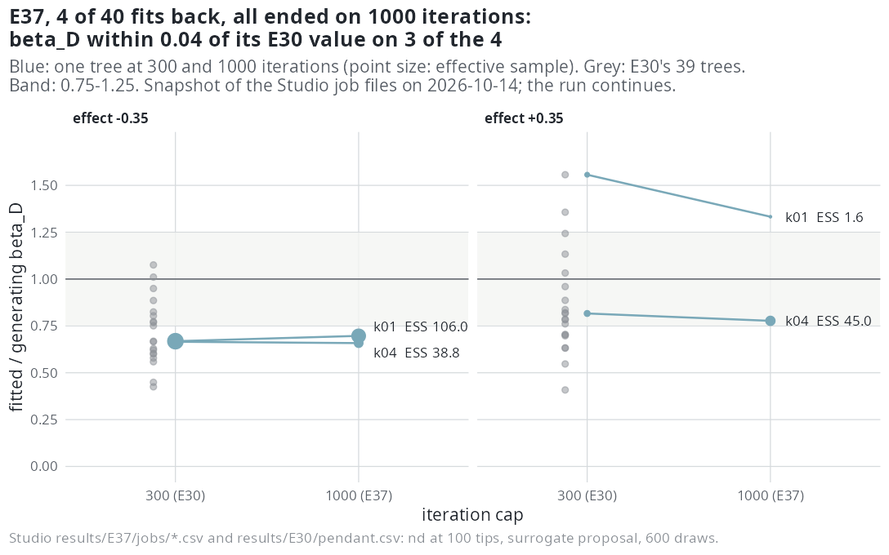

E37 — Does the pendant-age fit ever finish?
| Status | stopped by hand on 2026-10-15 with 6 of 40 fits written: it maximises the nd likelihood before the D fix (emphasis 4e0b9dd, E44), so its question is answered for the corrected model by the estimability study (E46, planned); its workers went to E45 |
| Package build | emphasis d3dee92 |
| Driver / analysis | sim/E19-pendant.R --out results/E37 --nd-sampling bdi --effects -0.35,0.35 --trees 20 --draws 600 --max-iter 1000 --max-time 216000; no analysis script |
| Data | not in the repository: results/E37/jobs/*.csv (4 files at the snapshot the Results read; 6 by the stop, results/E37/STOPPED.txt), design.rds; no merged CSV |
Question
No nd fit of the study had met the stopping rule within 300 iterations: 0 of 39 in E30 at 100 tips, 1 of 20 in E31b at 200 tips, where 18 ended on the cap. E30 lifted the coefficient from E19b's 0.43 and 0.63 of its value to 0.67 and 0.80, without a fit finishing, so whether the shortfall is the budget or the model is still open. E37 gives the same trees 1000 iterations.
Design
| Parameter | Value | Meaning |
|---|---|---|
| trees | E30's: nd at ±0.35, 100 tips, turnover 0.10, 20 a cell, by seed |
the same rows (tips, capacity, \(\beta_D = \pm0.0598\), \(D\) scale 2.92) in the job files checked |
| proposal | surrogate (bdi) for dd and nd |
|
| draws / link | 600 / linear | as E30 |
max_iter |
1000 | E30: 300 |
| clock | 60 hours per fit (--max-time 216000 s) |
four times what 1000 iterations take |
The dd fits are deterministic in these files: on the four trees back, aic_dd, ess_dd and beta_N_dd equal E30's to every digit, so the dd side is unchanged and only the nd fit has more iterations.
Pre-set rule
(1) The share of nd fits that meet the stopping rule; if it is below one half, the nd fit is reported as not converging within 1000 iterations at 100 tips. (2) On the fits that finish, E19's rule on \(\beta_D\) (median ratio in \([0.75, 1.25]\), right sign on \(\ge 80\%\)), beside E30's values on the same trees at 300 iterations, so that the move between 300 and 1000 iterations is measured tree by tree. (3) Cells with fewer than 10 effective draws on more than half the fits are sampler-limited.
Results
Unfinished: 4 of 40 fits. Read from the job files (read-only), paired with E30:
| tree | ratio at 300 (E30) | ESS | stop | ratio at 1000 (E37) | ESS | stop | change | nd over dd (\(\Delta\)AIC) |
|---|---|---|---|---|---|---|---|---|
| -0.35, k01 | 0.668 | 139.8 | clock | 0.697 | 106.0 | cap (1000) | +0.029 | 14.0 |
| -0.35, k04 | 0.665 | 7.9 | cap (300) | 0.658 | 38.8 | cap (1000) | -0.007 | 14.1 |
| +0.35, k01 | 1.557 | 8.9 | clock | 1.333 | 1.6 | cap (1000) | -0.224 | 20.5 |
| +0.35, k04 | 0.816 | 15.7 | cap (300) | 0.777 | 45.0 | cap (1000) | -0.039 | 16.7 |
Ratio: fitted over generating \(\beta_D\). None of the four met the stopping rule; each ran its 1000 iterations. Sign right on all four.

Conclusion
Not evaluable: stopped at 6 of 40 fits, of which the 4 read here had not met the stopping rule. If the remaining 36 behaved as these four, rule (1) would report the nd fit as not converging within 1000 iterations at 100 tips; that is a projection from 4 fits, not a result. On these four trees, 700 more iterations moved \(\beta_D\) by -0.04 to +0.03 of its value on the three with 39-106 effective draws, so the shortfall at -0.35 (0.66 and 0.70) did not close with the budget on these trees. The fourth is a single tree on 1.6 draws. The rate of progress (4 fits in about 23 hours on 8 workers) is recorded as observed.